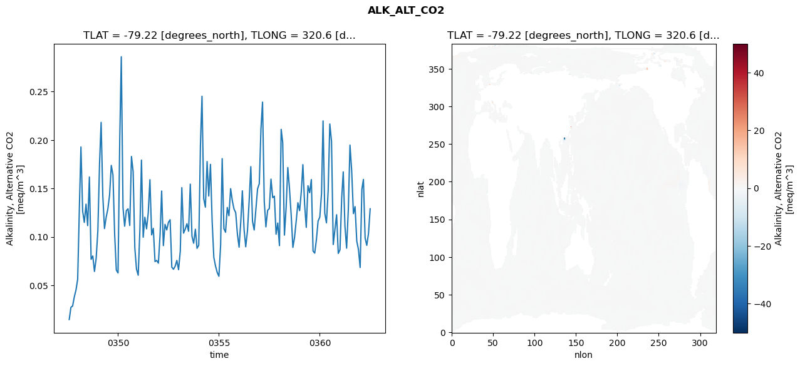
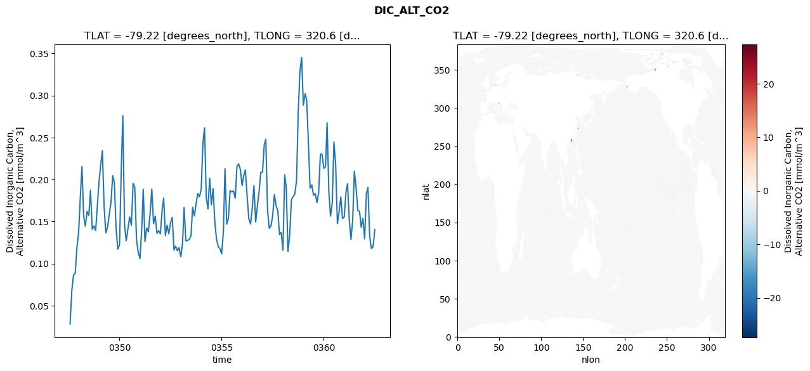
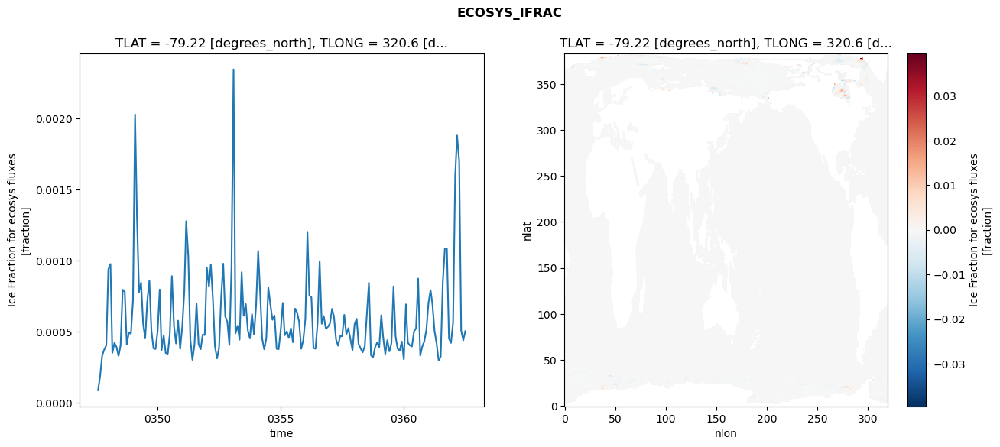
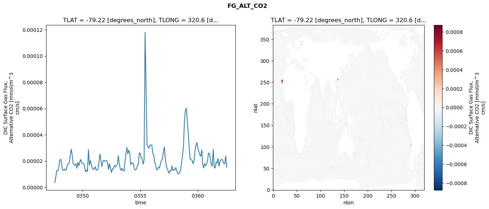

glb-dor_North_Atlantic_basin_033_1999-07-01_00134#
Simulation details#
Case: smyle.cdr-atlas-v0.glb-dor_North_Atlantic_basin_033_1999-07-01_00134.001
Basin: North_Atlantic_basin
Polygon: 33.0
Start date: 1999-07
Show code cell source Hide code cell source
import xarray as xr
import matplotlib.pyplot as plt
Show code cell source Hide code cell source
zarr_store = "/path/to/zarr/store"
# Parameters
zarr_store = "/global/cfs/projectdirs/m4746/Projects/Ocean-CDR-Atlas-v0/data/validation/smyle.cdr-atlas-v0.glb-dor_North_Atlantic_basin_033_1999-07-01_00134.001.validation.zarr"
Show code cell source Hide code cell source
%%time
ds_o = xr.open_zarr(zarr_store).compute()
ds_o
CPU times: user 675 ms, sys: 429 ms, total: 1.1 s
Wall time: 1.41 s
<xarray.Dataset> Size: 2MB
Dimensions: (nlat: 384, nlon: 320, time: 180)
Coordinates:
TLAT float64 8B -79.22
TLONG float64 8B 320.6
ULAT float64 8B -78.95
ULONG float64 8B 321.1
* time (time) object 1kB 0347-08-01 00:00:00 ... 0362-07-01 0...
z_t float32 4B 500.0
Dimensions without coordinates: nlat, nlon
Data variables:
ALK_ALT_CO2_diff (nlat, nlon) float32 492kB nan nan nan ... nan nan nan
ALK_ALT_CO2_rmse (time) float64 1kB 0.01482 0.02747 ... 0.1038 0.129
DIC_ALT_CO2_diff (nlat, nlon) float32 492kB nan nan nan ... nan nan nan
DIC_ALT_CO2_rmse (time) float64 1kB 0.02814 0.06779 ... 0.1201 0.1404
ECOSYS_IFRAC_diff (nlat, nlon) float32 492kB nan nan nan ... nan nan nan
ECOSYS_IFRAC_rmse (time) float64 1kB 8.982e-05 0.0001893 ... 0.000506
FG_ALT_CO2_diff (nlat, nlon) float32 492kB nan nan nan ... nan nan nan
FG_ALT_CO2_rmse (time) float64 1kB 3.661e-06 8.025e-06 ... 1.522e-05xarray.Dataset
- nlat: 384
- nlon: 320
- time: 180
- TLAT()float64-79.22
- long_name :
- array of t-grid latitudes
- units :
- degrees_north
array(-79.22052261)
- TLONG()float64320.6
- long_name :
- array of t-grid longitudes
- units :
- degrees_east
array(320.56250892)
- ULAT()float64-78.95
- long_name :
- array of u-grid latitudes
- units :
- degrees_north
array(-78.95289509)
- ULONG()float64321.1
- long_name :
- array of u-grid longitudes
- units :
- degrees_east
array(321.12500894)
- time(time)object0347-08-01 00:00:00 ... 0362-07-...
- bounds :
- time_bound
- long_name :
- time
array([cftime.DatetimeNoLeap(347, 8, 1, 0, 0, 0, 0, has_year_zero=True), cftime.DatetimeNoLeap(347, 9, 1, 0, 0, 0, 0, has_year_zero=True), cftime.DatetimeNoLeap(347, 10, 1, 0, 0, 0, 0, has_year_zero=True), cftime.DatetimeNoLeap(347, 11, 1, 0, 0, 0, 0, has_year_zero=True), cftime.DatetimeNoLeap(347, 12, 1, 0, 0, 0, 0, has_year_zero=True), cftime.DatetimeNoLeap(348, 1, 1, 0, 0, 0, 0, has_year_zero=True), cftime.DatetimeNoLeap(348, 2, 1, 0, 0, 0, 0, has_year_zero=True), cftime.DatetimeNoLeap(348, 3, 1, 0, 0, 0, 0, has_year_zero=True), cftime.DatetimeNoLeap(348, 4, 1, 0, 0, 0, 0, has_year_zero=True), cftime.DatetimeNoLeap(348, 5, 1, 0, 0, 0, 0, has_year_zero=True), cftime.DatetimeNoLeap(348, 6, 1, 0, 0, 0, 0, has_year_zero=True), cftime.DatetimeNoLeap(348, 7, 1, 0, 0, 0, 0, has_year_zero=True), cftime.DatetimeNoLeap(348, 8, 1, 0, 0, 0, 0, has_year_zero=True), cftime.DatetimeNoLeap(348, 9, 1, 0, 0, 0, 0, has_year_zero=True), cftime.DatetimeNoLeap(348, 10, 1, 0, 0, 0, 0, has_year_zero=True), cftime.DatetimeNoLeap(348, 11, 1, 0, 0, 0, 0, has_year_zero=True), cftime.DatetimeNoLeap(348, 12, 1, 0, 0, 0, 0, has_year_zero=True), cftime.DatetimeNoLeap(349, 1, 1, 0, 0, 0, 0, has_year_zero=True), cftime.DatetimeNoLeap(349, 2, 1, 0, 0, 0, 0, has_year_zero=True), cftime.DatetimeNoLeap(349, 3, 1, 0, 0, 0, 0, has_year_zero=True), cftime.DatetimeNoLeap(349, 4, 1, 0, 0, 0, 0, has_year_zero=True), cftime.DatetimeNoLeap(349, 5, 1, 0, 0, 0, 0, has_year_zero=True), cftime.DatetimeNoLeap(349, 6, 1, 0, 0, 0, 0, has_year_zero=True), cftime.DatetimeNoLeap(349, 7, 1, 0, 0, 0, 0, has_year_zero=True), cftime.DatetimeNoLeap(349, 8, 1, 0, 0, 0, 0, has_year_zero=True), cftime.DatetimeNoLeap(349, 9, 1, 0, 0, 0, 0, has_year_zero=True), cftime.DatetimeNoLeap(349, 10, 1, 0, 0, 0, 0, has_year_zero=True), cftime.DatetimeNoLeap(349, 11, 1, 0, 0, 0, 0, has_year_zero=True), cftime.DatetimeNoLeap(349, 12, 1, 0, 0, 0, 0, has_year_zero=True), cftime.DatetimeNoLeap(350, 1, 1, 0, 0, 0, 0, has_year_zero=True), cftime.DatetimeNoLeap(350, 2, 1, 0, 0, 0, 0, has_year_zero=True), cftime.DatetimeNoLeap(350, 3, 1, 0, 0, 0, 0, has_year_zero=True), cftime.DatetimeNoLeap(350, 4, 1, 0, 0, 0, 0, has_year_zero=True), cftime.DatetimeNoLeap(350, 5, 1, 0, 0, 0, 0, has_year_zero=True), cftime.DatetimeNoLeap(350, 6, 1, 0, 0, 0, 0, has_year_zero=True), cftime.DatetimeNoLeap(350, 7, 1, 0, 0, 0, 0, has_year_zero=True), cftime.DatetimeNoLeap(350, 8, 1, 0, 0, 0, 0, has_year_zero=True), cftime.DatetimeNoLeap(350, 9, 1, 0, 0, 0, 0, has_year_zero=True), cftime.DatetimeNoLeap(350, 10, 1, 0, 0, 0, 0, has_year_zero=True), cftime.DatetimeNoLeap(350, 11, 1, 0, 0, 0, 0, has_year_zero=True), cftime.DatetimeNoLeap(350, 12, 1, 0, 0, 0, 0, has_year_zero=True), cftime.DatetimeNoLeap(351, 1, 1, 0, 0, 0, 0, has_year_zero=True), cftime.DatetimeNoLeap(351, 2, 1, 0, 0, 0, 0, has_year_zero=True), cftime.DatetimeNoLeap(351, 3, 1, 0, 0, 0, 0, has_year_zero=True), cftime.DatetimeNoLeap(351, 4, 1, 0, 0, 0, 0, has_year_zero=True), cftime.DatetimeNoLeap(351, 5, 1, 0, 0, 0, 0, has_year_zero=True), cftime.DatetimeNoLeap(351, 6, 1, 0, 0, 0, 0, has_year_zero=True), cftime.DatetimeNoLeap(351, 7, 1, 0, 0, 0, 0, has_year_zero=True), cftime.DatetimeNoLeap(351, 8, 1, 0, 0, 0, 0, has_year_zero=True), cftime.DatetimeNoLeap(351, 9, 1, 0, 0, 0, 0, has_year_zero=True), cftime.DatetimeNoLeap(351, 10, 1, 0, 0, 0, 0, has_year_zero=True), cftime.DatetimeNoLeap(351, 11, 1, 0, 0, 0, 0, has_year_zero=True), cftime.DatetimeNoLeap(351, 12, 1, 0, 0, 0, 0, has_year_zero=True), cftime.DatetimeNoLeap(352, 1, 1, 0, 0, 0, 0, has_year_zero=True), cftime.DatetimeNoLeap(352, 2, 1, 0, 0, 0, 0, has_year_zero=True), cftime.DatetimeNoLeap(352, 3, 1, 0, 0, 0, 0, has_year_zero=True), cftime.DatetimeNoLeap(352, 4, 1, 0, 0, 0, 0, has_year_zero=True), cftime.DatetimeNoLeap(352, 5, 1, 0, 0, 0, 0, has_year_zero=True), cftime.DatetimeNoLeap(352, 6, 1, 0, 0, 0, 0, has_year_zero=True), cftime.DatetimeNoLeap(352, 7, 1, 0, 0, 0, 0, has_year_zero=True), cftime.DatetimeNoLeap(352, 8, 1, 0, 0, 0, 0, has_year_zero=True), cftime.DatetimeNoLeap(352, 9, 1, 0, 0, 0, 0, has_year_zero=True), cftime.DatetimeNoLeap(352, 10, 1, 0, 0, 0, 0, has_year_zero=True), cftime.DatetimeNoLeap(352, 11, 1, 0, 0, 0, 0, has_year_zero=True), cftime.DatetimeNoLeap(352, 12, 1, 0, 0, 0, 0, has_year_zero=True), cftime.DatetimeNoLeap(353, 1, 1, 0, 0, 0, 0, has_year_zero=True), cftime.DatetimeNoLeap(353, 2, 1, 0, 0, 0, 0, has_year_zero=True), cftime.DatetimeNoLeap(353, 3, 1, 0, 0, 0, 0, has_year_zero=True), cftime.DatetimeNoLeap(353, 4, 1, 0, 0, 0, 0, has_year_zero=True), cftime.DatetimeNoLeap(353, 5, 1, 0, 0, 0, 0, has_year_zero=True), cftime.DatetimeNoLeap(353, 6, 1, 0, 0, 0, 0, has_year_zero=True), cftime.DatetimeNoLeap(353, 7, 1, 0, 0, 0, 0, has_year_zero=True), cftime.DatetimeNoLeap(353, 8, 1, 0, 0, 0, 0, has_year_zero=True), cftime.DatetimeNoLeap(353, 9, 1, 0, 0, 0, 0, has_year_zero=True), cftime.DatetimeNoLeap(353, 10, 1, 0, 0, 0, 0, has_year_zero=True), cftime.DatetimeNoLeap(353, 11, 1, 0, 0, 0, 0, has_year_zero=True), cftime.DatetimeNoLeap(353, 12, 1, 0, 0, 0, 0, has_year_zero=True), cftime.DatetimeNoLeap(354, 1, 1, 0, 0, 0, 0, has_year_zero=True), cftime.DatetimeNoLeap(354, 2, 1, 0, 0, 0, 0, has_year_zero=True), cftime.DatetimeNoLeap(354, 3, 1, 0, 0, 0, 0, has_year_zero=True), cftime.DatetimeNoLeap(354, 4, 1, 0, 0, 0, 0, has_year_zero=True), cftime.DatetimeNoLeap(354, 5, 1, 0, 0, 0, 0, has_year_zero=True), cftime.DatetimeNoLeap(354, 6, 1, 0, 0, 0, 0, has_year_zero=True), cftime.DatetimeNoLeap(354, 7, 1, 0, 0, 0, 0, has_year_zero=True), cftime.DatetimeNoLeap(354, 8, 1, 0, 0, 0, 0, has_year_zero=True), cftime.DatetimeNoLeap(354, 9, 1, 0, 0, 0, 0, has_year_zero=True), cftime.DatetimeNoLeap(354, 10, 1, 0, 0, 0, 0, has_year_zero=True), cftime.DatetimeNoLeap(354, 11, 1, 0, 0, 0, 0, has_year_zero=True), cftime.DatetimeNoLeap(354, 12, 1, 0, 0, 0, 0, has_year_zero=True), cftime.DatetimeNoLeap(355, 1, 1, 0, 0, 0, 0, has_year_zero=True), cftime.DatetimeNoLeap(355, 2, 1, 0, 0, 0, 0, has_year_zero=True), cftime.DatetimeNoLeap(355, 3, 1, 0, 0, 0, 0, has_year_zero=True), cftime.DatetimeNoLeap(355, 4, 1, 0, 0, 0, 0, has_year_zero=True), cftime.DatetimeNoLeap(355, 5, 1, 0, 0, 0, 0, has_year_zero=True), cftime.DatetimeNoLeap(355, 6, 1, 0, 0, 0, 0, has_year_zero=True), cftime.DatetimeNoLeap(355, 7, 1, 0, 0, 0, 0, has_year_zero=True), cftime.DatetimeNoLeap(355, 8, 1, 0, 0, 0, 0, has_year_zero=True), cftime.DatetimeNoLeap(355, 9, 1, 0, 0, 0, 0, has_year_zero=True), cftime.DatetimeNoLeap(355, 10, 1, 0, 0, 0, 0, has_year_zero=True), cftime.DatetimeNoLeap(355, 11, 1, 0, 0, 0, 0, has_year_zero=True), cftime.DatetimeNoLeap(355, 12, 1, 0, 0, 0, 0, has_year_zero=True), cftime.DatetimeNoLeap(356, 1, 1, 0, 0, 0, 0, has_year_zero=True), cftime.DatetimeNoLeap(356, 2, 1, 0, 0, 0, 0, has_year_zero=True), cftime.DatetimeNoLeap(356, 3, 1, 0, 0, 0, 0, has_year_zero=True), cftime.DatetimeNoLeap(356, 4, 1, 0, 0, 0, 0, has_year_zero=True), cftime.DatetimeNoLeap(356, 5, 1, 0, 0, 0, 0, has_year_zero=True), cftime.DatetimeNoLeap(356, 6, 1, 0, 0, 0, 0, has_year_zero=True), cftime.DatetimeNoLeap(356, 7, 1, 0, 0, 0, 0, has_year_zero=True), cftime.DatetimeNoLeap(356, 8, 1, 0, 0, 0, 0, has_year_zero=True), cftime.DatetimeNoLeap(356, 9, 1, 0, 0, 0, 0, has_year_zero=True), cftime.DatetimeNoLeap(356, 10, 1, 0, 0, 0, 0, has_year_zero=True), cftime.DatetimeNoLeap(356, 11, 1, 0, 0, 0, 0, has_year_zero=True), cftime.DatetimeNoLeap(356, 12, 1, 0, 0, 0, 0, has_year_zero=True), cftime.DatetimeNoLeap(357, 1, 1, 0, 0, 0, 0, has_year_zero=True), cftime.DatetimeNoLeap(357, 2, 1, 0, 0, 0, 0, has_year_zero=True), cftime.DatetimeNoLeap(357, 3, 1, 0, 0, 0, 0, has_year_zero=True), cftime.DatetimeNoLeap(357, 4, 1, 0, 0, 0, 0, has_year_zero=True), cftime.DatetimeNoLeap(357, 5, 1, 0, 0, 0, 0, has_year_zero=True), cftime.DatetimeNoLeap(357, 6, 1, 0, 0, 0, 0, has_year_zero=True), cftime.DatetimeNoLeap(357, 7, 1, 0, 0, 0, 0, has_year_zero=True), cftime.DatetimeNoLeap(357, 8, 1, 0, 0, 0, 0, has_year_zero=True), cftime.DatetimeNoLeap(357, 9, 1, 0, 0, 0, 0, has_year_zero=True), cftime.DatetimeNoLeap(357, 10, 1, 0, 0, 0, 0, has_year_zero=True), cftime.DatetimeNoLeap(357, 11, 1, 0, 0, 0, 0, has_year_zero=True), cftime.DatetimeNoLeap(357, 12, 1, 0, 0, 0, 0, has_year_zero=True), cftime.DatetimeNoLeap(358, 1, 1, 0, 0, 0, 0, has_year_zero=True), cftime.DatetimeNoLeap(358, 2, 1, 0, 0, 0, 0, has_year_zero=True), cftime.DatetimeNoLeap(358, 3, 1, 0, 0, 0, 0, has_year_zero=True), cftime.DatetimeNoLeap(358, 4, 1, 0, 0, 0, 0, has_year_zero=True), cftime.DatetimeNoLeap(358, 5, 1, 0, 0, 0, 0, has_year_zero=True), cftime.DatetimeNoLeap(358, 6, 1, 0, 0, 0, 0, has_year_zero=True), cftime.DatetimeNoLeap(358, 7, 1, 0, 0, 0, 0, has_year_zero=True), cftime.DatetimeNoLeap(358, 8, 1, 0, 0, 0, 0, has_year_zero=True), cftime.DatetimeNoLeap(358, 9, 1, 0, 0, 0, 0, has_year_zero=True), cftime.DatetimeNoLeap(358, 10, 1, 0, 0, 0, 0, has_year_zero=True), cftime.DatetimeNoLeap(358, 11, 1, 0, 0, 0, 0, has_year_zero=True), cftime.DatetimeNoLeap(358, 12, 1, 0, 0, 0, 0, has_year_zero=True), cftime.DatetimeNoLeap(359, 1, 1, 0, 0, 0, 0, has_year_zero=True), cftime.DatetimeNoLeap(359, 2, 1, 0, 0, 0, 0, has_year_zero=True), cftime.DatetimeNoLeap(359, 3, 1, 0, 0, 0, 0, has_year_zero=True), cftime.DatetimeNoLeap(359, 4, 1, 0, 0, 0, 0, has_year_zero=True), cftime.DatetimeNoLeap(359, 5, 1, 0, 0, 0, 0, has_year_zero=True), cftime.DatetimeNoLeap(359, 6, 1, 0, 0, 0, 0, has_year_zero=True), cftime.DatetimeNoLeap(359, 7, 1, 0, 0, 0, 0, has_year_zero=True), cftime.DatetimeNoLeap(359, 8, 1, 0, 0, 0, 0, has_year_zero=True), cftime.DatetimeNoLeap(359, 9, 1, 0, 0, 0, 0, has_year_zero=True), cftime.DatetimeNoLeap(359, 10, 1, 0, 0, 0, 0, has_year_zero=True), cftime.DatetimeNoLeap(359, 11, 1, 0, 0, 0, 0, has_year_zero=True), cftime.DatetimeNoLeap(359, 12, 1, 0, 0, 0, 0, has_year_zero=True), cftime.DatetimeNoLeap(360, 1, 1, 0, 0, 0, 0, has_year_zero=True), cftime.DatetimeNoLeap(360, 2, 1, 0, 0, 0, 0, has_year_zero=True), cftime.DatetimeNoLeap(360, 3, 1, 0, 0, 0, 0, has_year_zero=True), cftime.DatetimeNoLeap(360, 4, 1, 0, 0, 0, 0, has_year_zero=True), cftime.DatetimeNoLeap(360, 5, 1, 0, 0, 0, 0, has_year_zero=True), cftime.DatetimeNoLeap(360, 6, 1, 0, 0, 0, 0, has_year_zero=True), cftime.DatetimeNoLeap(360, 7, 1, 0, 0, 0, 0, has_year_zero=True), cftime.DatetimeNoLeap(360, 8, 1, 0, 0, 0, 0, has_year_zero=True), cftime.DatetimeNoLeap(360, 9, 1, 0, 0, 0, 0, has_year_zero=True), cftime.DatetimeNoLeap(360, 10, 1, 0, 0, 0, 0, has_year_zero=True), cftime.DatetimeNoLeap(360, 11, 1, 0, 0, 0, 0, has_year_zero=True), cftime.DatetimeNoLeap(360, 12, 1, 0, 0, 0, 0, has_year_zero=True), cftime.DatetimeNoLeap(361, 1, 1, 0, 0, 0, 0, has_year_zero=True), cftime.DatetimeNoLeap(361, 2, 1, 0, 0, 0, 0, has_year_zero=True), cftime.DatetimeNoLeap(361, 3, 1, 0, 0, 0, 0, has_year_zero=True), cftime.DatetimeNoLeap(361, 4, 1, 0, 0, 0, 0, has_year_zero=True), cftime.DatetimeNoLeap(361, 5, 1, 0, 0, 0, 0, has_year_zero=True), cftime.DatetimeNoLeap(361, 6, 1, 0, 0, 0, 0, has_year_zero=True), cftime.DatetimeNoLeap(361, 7, 1, 0, 0, 0, 0, has_year_zero=True), cftime.DatetimeNoLeap(361, 8, 1, 0, 0, 0, 0, has_year_zero=True), cftime.DatetimeNoLeap(361, 9, 1, 0, 0, 0, 0, has_year_zero=True), cftime.DatetimeNoLeap(361, 10, 1, 0, 0, 0, 0, has_year_zero=True), cftime.DatetimeNoLeap(361, 11, 1, 0, 0, 0, 0, has_year_zero=True), cftime.DatetimeNoLeap(361, 12, 1, 0, 0, 0, 0, has_year_zero=True), cftime.DatetimeNoLeap(362, 1, 1, 0, 0, 0, 0, has_year_zero=True), cftime.DatetimeNoLeap(362, 2, 1, 0, 0, 0, 0, has_year_zero=True), cftime.DatetimeNoLeap(362, 3, 1, 0, 0, 0, 0, has_year_zero=True), cftime.DatetimeNoLeap(362, 4, 1, 0, 0, 0, 0, has_year_zero=True), cftime.DatetimeNoLeap(362, 5, 1, 0, 0, 0, 0, has_year_zero=True), cftime.DatetimeNoLeap(362, 6, 1, 0, 0, 0, 0, has_year_zero=True), cftime.DatetimeNoLeap(362, 7, 1, 0, 0, 0, 0, has_year_zero=True)], dtype=object) - z_t()float32500.0
- long_name :
- depth from surface to midpoint of layer
- positive :
- down
- units :
- centimeters
- valid_max :
- 537500.0
- valid_min :
- 500.0
array(500., dtype=float32)
- ALK_ALT_CO2_diff(nlat, nlon)float32nan nan nan nan ... nan nan nan nan
- cell_methods :
- time: mean
- grid_loc :
- 3111
- long_name :
- Alkalinity, Alternative CO2
- units :
- meq/m^3
array([[ nan, nan, nan, ..., nan, nan, nan], [ nan, nan, nan, ..., nan, nan, nan], [0.01660156, 0.00952148, 0.01953125, ..., nan, nan, nan], ..., [ nan, nan, nan, ..., nan, nan, nan], [ nan, nan, nan, ..., nan, nan, nan], [ nan, nan, nan, ..., nan, nan, nan]], dtype=float32) - ALK_ALT_CO2_rmse(time)float640.01482 0.02747 ... 0.1038 0.129
- cell_methods :
- time: mean
- grid_loc :
- 3111
- long_name :
- Alkalinity, Alternative CO2
- units :
- meq/m^3
array([0.01481843, 0.02747437, 0.0286924 , 0.03818174, 0.04515086, 0.05634387, 0.13103078, 0.19278965, 0.1265497 , 0.11499066, 0.13382276, 0.11168644, 0.16179751, 0.07693092, 0.08036404, 0.06441498, 0.07775119, 0.10639721, 0.17661372, 0.21815034, 0.14165813, 0.108637 , 0.12057692, 0.12887258, 0.14320107, 0.17376998, 0.16403317, 0.10266218, 0.06580817, 0.06282808, 0.20039947, 0.2858294 , 0.13008968, 0.11106985, 0.12727337, 0.12899741, 0.11180959, 0.1829462 , 0.16751388, 0.08849708, 0.06684963, 0.06053512, 0.10827967, 0.17924622, 0.09973376, 0.12028366, 0.10836316, 0.12447737, 0.15905388, 0.1021287 , 0.1088321 , 0.07460522, 0.07576063, 0.07294595, 0.10253432, 0.14735028, 0.09102421, 0.11294679, 0.10720948, 0.11496171, 0.11777347, 0.06875727, 0.06667063, 0.06984937, 0.0757945 , 0.06623484, 0.08536874, 0.15085318, 0.10389383, 0.10792187, 0.11359215, 0.10590197, 0.1544387 , 0.10057113, 0.09351197, 0.10793488, 0.08823066, 0.09136281, 0.19582154, 0.24507426, 0.13952261, 0.13073227, 0.17777411, 0.14219216, 0.17482312, 0.11518741, 0.07896747, 0.06990525, 0.06342999, 0.05944023, 0.09186137, 0.18076434, 0.10854473, 0.10481 , 0.13032035, 0.12185926, 0.14979356, 0.13700374, 0.12879119, 0.12497772, 0.10322452, 0.08942114, 0.11623625, 0.14757028, 0.10784155, 0.08986638, 0.10599005, 0.13591367, 0.1724879 , 0.11606891, 0.10718775, 0.12882126, 0.14949462, 0.15494309, 0.21197552, 0.2390439 , 0.13675373, 0.11038208, 0.12749222, 0.12917137, 0.15961944, 0.14045814, 0.14204186, 0.10282061, 0.11433534, 0.09104816, 0.21095746, 0.19732017, 0.10186163, 0.12935806, 0.17157766, 0.15030968, 0.12282167, 0.08921511, 0.09948892, 0.11696942, 0.13526648, 0.12709202, 0.14731653, 0.17455132, 0.133961 , 0.10984567, 0.15284082, 0.1456572 , 0.15918117, 0.08546916, 0.08329491, 0.09744989, 0.11636524, 0.12048252, 0.1447067 , 0.21968453, 0.12439613, 0.11454951, 0.14743812, 0.21653361, 0.19843324, 0.09216135, 0.10726474, 0.12294247, 0.08301484, 0.08670753, 0.13997521, 0.16707811, 0.11102792, 0.08839627, 0.12841655, 0.19470682, 0.16789674, 0.12408839, 0.13123097, 0.09562033, 0.08708201, 0.06848755, 0.14908435, 0.15931037, 0.09880577, 0.09132935, 0.10375338, 0.12902407]) - DIC_ALT_CO2_diff(nlat, nlon)float32nan nan nan nan ... nan nan nan nan
- cell_methods :
- time: mean
- grid_loc :
- 3111
- long_name :
- Dissolved Inorganic Carbon, Alternative CO2
- units :
- mmol/m^3
array([[ nan, nan, nan, ..., nan, nan, nan], [ nan, nan, nan, ..., nan, nan, nan], [0.01733398, 0.01611328, 0.01757812, ..., nan, nan, nan], ..., [ nan, nan, nan, ..., nan, nan, nan], [ nan, nan, nan, ..., nan, nan, nan], [ nan, nan, nan, ..., nan, nan, nan]], dtype=float32) - DIC_ALT_CO2_rmse(time)float640.02814 0.06779 ... 0.1201 0.1404
- cell_methods :
- time: mean
- grid_loc :
- 3111
- long_name :
- Dissolved Inorganic Carbon, Alternative CO2
- units :
- mmol/m^3
array([0.0281414 , 0.06779368, 0.08609592, 0.08857759, 0.1186511 , 0.13766345, 0.18088088, 0.21541616, 0.15601647, 0.14462161, 0.16193784, 0.15723385, 0.18725654, 0.14070883, 0.1447379 , 0.13945437, 0.16898795, 0.19863597, 0.21868473, 0.23431332, 0.16763031, 0.13640865, 0.14343415, 0.1578141 , 0.17238602, 0.20450061, 0.19635331, 0.14213391, 0.11710514, 0.12197237, 0.21067562, 0.27607651, 0.14565761, 0.12709296, 0.14173259, 0.15547401, 0.14533962, 0.19543953, 0.19075434, 0.12836452, 0.11350989, 0.10592992, 0.13871681, 0.1885126 , 0.12611758, 0.14235089, 0.13783627, 0.15875659, 0.1885362 , 0.14756768, 0.15641761, 0.13588824, 0.13915219, 0.13540076, 0.16302231, 0.17799861, 0.13333775, 0.14553297, 0.13540698, 0.14834687, 0.15496292, 0.11608786, 0.1207265 , 0.11509926, 0.11888598, 0.10822557, 0.12414858, 0.16663053, 0.12704225, 0.12747614, 0.12875203, 0.13291723, 0.16692837, 0.15673808, 0.17101772, 0.18338485, 0.17941268, 0.18861111, 0.24454651, 0.26151841, 0.17850573, 0.16499503, 0.20175462, 0.17000322, 0.18917357, 0.14997223, 0.12900437, 0.12021943, 0.11772511, 0.11152262, 0.1380668 , 0.21280132, 0.14685856, 0.15353433, 0.18677484, 0.18526 , 0.18637552, 0.17785886, 0.21571329, 0.21866137, 0.21193238, 0.19283074, 0.20502099, 0.21138197, 0.18018559, 0.15356438, 0.14712648, 0.16542116, 0.19262339, 0.14952664, 0.1680018 , 0.18588769, 0.20867316, 0.20854173, 0.24149596, 0.24782215, 0.16348727, 0.14189214, 0.14489925, 0.15662263, 0.18216169, 0.16857322, 0.16295699, 0.1344416 , 0.13695524, 0.11582571, 0.20553929, 0.19112758, 0.11442727, 0.13317311, 0.17598242, 0.17956815, 0.18270293, 0.19842407, 0.27953504, 0.32964346, 0.34522323, 0.28844511, 0.30228276, 0.29480955, 0.24313172, 0.18962642, 0.19357376, 0.18126752, 0.18323063, 0.17256212, 0.18427181, 0.23034619, 0.22995099, 0.2133439 , 0.21527505, 0.26742701, 0.18619483, 0.15640778, 0.17182974, 0.24472393, 0.21724877, 0.14743433, 0.16155125, 0.17932644, 0.15350522, 0.15558591, 0.18467635, 0.19489433, 0.15241379, 0.12872501, 0.15144465, 0.21001451, 0.18985243, 0.16332074, 0.16230929, 0.14306896, 0.15370822, 0.12942297, 0.18326169, 0.19051313, 0.13256927, 0.11780232, 0.12014287, 0.14042895]) - ECOSYS_IFRAC_diff(nlat, nlon)float32nan nan nan nan ... nan nan nan nan
- cell_methods :
- time: mean
- grid_loc :
- 2110
- long_name :
- Ice Fraction for ecosys fluxes
- units :
- fraction
array([[ nan, nan, nan, ..., nan, nan, nan], [ nan, nan, nan, ..., nan, nan, nan], [2.3901463e-05, 1.0484457e-04, 3.3080578e-05, ..., nan, nan, nan], ..., [ nan, nan, nan, ..., nan, nan, nan], [ nan, nan, nan, ..., nan, nan, nan], [ nan, nan, nan, ..., nan, nan, nan]], dtype=float32) - ECOSYS_IFRAC_rmse(time)float648.982e-05 0.0001893 ... 0.000506
- cell_methods :
- time: mean
- grid_loc :
- 2110
- long_name :
- Ice Fraction for ecosys fluxes
- units :
- fraction
array([8.98215345e-05, 1.89268888e-04, 3.34930174e-04, 3.76038062e-04, 4.05699068e-04, 9.40599986e-04, 9.78398212e-04, 3.52537245e-04, 4.22902746e-04, 3.94707341e-04, 3.31716518e-04, 4.04746884e-04, 7.97528496e-04, 7.81875612e-04, 4.10781039e-04, 4.96549141e-04, 4.87297922e-04, 7.20536895e-04, 2.03050142e-03, 1.30903182e-03, 7.79321895e-04, 8.46973131e-04, 5.55131593e-04, 4.54603886e-04, 7.17177734e-04, 8.62245151e-04, 5.10082925e-04, 3.84219370e-04, 3.79610221e-04, 5.03471728e-04, 7.98571371e-04, 3.72943585e-04, 4.75721398e-04, 3.51887319e-04, 3.46229829e-04, 4.84783145e-04, 8.93333581e-04, 5.43663933e-04, 4.19191274e-04, 5.79556228e-04, 3.81111564e-04, 5.32746744e-04, 7.86072128e-04, 1.27924680e-03, 1.03449632e-03, 4.48483313e-04, 3.03755035e-04, 4.06363779e-04, 7.00573859e-04, 4.12531007e-04, 3.78208225e-04, 4.81552051e-04, 4.78082153e-04, 9.53278786e-04, 8.18656078e-04, 9.76449010e-04, 7.30669898e-04, 3.99390446e-04, 3.13650217e-04, 3.87725534e-04, 7.43177312e-04, 9.80670076e-04, 6.08281273e-04, 5.71182687e-04, 4.07906185e-04, 9.47999342e-04, 2.34801135e-03, 4.89445224e-04, 5.43875035e-04, 4.45296079e-04, 9.20457309e-04, 6.13550129e-04, 6.96091928e-04, 5.09921195e-04, 4.54197360e-04, 6.25643630e-04, 4.81374770e-04, 6.86505140e-04, 1.07000881e-03, 7.88666568e-04, ... 4.41281619e-04, 5.89402277e-04, 1.20473444e-03, 7.56194629e-04, 7.43733864e-04, 3.86303382e-04, 3.81906096e-04, 5.60135595e-04, 9.97732030e-04, 5.57933623e-04, 6.12181427e-04, 5.22663625e-04, 5.35461017e-04, 5.60127499e-04, 6.62719469e-04, 6.09909489e-04, 4.46873420e-04, 4.03356062e-04, 4.70553397e-04, 4.69677381e-04, 6.20538826e-04, 4.82499409e-04, 5.26245833e-04, 4.48642998e-04, 3.71109680e-04, 5.55102371e-04, 5.92296551e-04, 4.14882613e-04, 3.83477530e-04, 3.56311314e-04, 3.99909338e-04, 6.16009928e-04, 8.46397629e-04, 3.35955329e-04, 3.20349604e-04, 3.91876604e-04, 4.25442835e-04, 3.93136954e-04, 6.19598100e-04, 4.59619405e-04, 3.45093747e-04, 4.42055512e-04, 3.63312023e-04, 4.20165617e-04, 8.20079429e-04, 4.66006468e-04, 3.81876906e-04, 3.68742859e-04, 4.33078199e-04, 3.07078429e-04, 6.94415005e-04, 4.25517444e-04, 4.05037875e-04, 3.97842734e-04, 5.04734662e-04, 5.24919265e-04, 8.75889119e-04, 3.33628082e-04, 3.97006177e-04, 4.35390403e-04, 5.15660174e-04, 7.04535378e-04, 7.94684529e-04, 6.95633482e-04, 5.06807937e-04, 4.20222966e-04, 2.99608519e-04, 3.25942130e-04, 8.45924769e-04, 1.08806116e-03, 1.08535212e-03, 4.53235187e-04, 4.23023563e-04, 5.67703167e-04, 1.59622341e-03, 1.88234852e-03, 1.70297775e-03, 5.09898452e-04, 4.40980565e-04, 5.05952586e-04]) - FG_ALT_CO2_diff(nlat, nlon)float32nan nan nan nan ... nan nan nan nan
- cell_methods :
- time: mean
- grid_loc :
- 2110
- long_name :
- DIC Surface Gas Flux, Alternative CO2
- units :
- mmol/m^3 cm/s
array([[ nan, nan, nan, ..., nan, nan, nan], [ nan, nan, nan, ..., nan, nan, nan], [-1.2553528e-08, -3.4994173e-08, -1.9220987e-08, ..., nan, nan, nan], ..., [ nan, nan, nan, ..., nan, nan, nan], [ nan, nan, nan, ..., nan, nan, nan], [ nan, nan, nan, ..., nan, nan, nan]], dtype=float32) - FG_ALT_CO2_rmse(time)float643.661e-06 8.025e-06 ... 1.522e-05
- cell_methods :
- time: mean
- grid_loc :
- 2110
- long_name :
- DIC Surface Gas Flux, Alternative CO2
- units :
- mmol/m^3 cm/s
array([3.66136550e-06, 8.02496882e-06, 1.28062448e-05, 1.25731882e-05, 1.40473894e-05, 2.07359918e-05, 2.11928453e-05, 1.82534341e-05, 1.31636762e-05, 1.29384201e-05, 1.39495883e-05, 1.29475277e-05, 1.34147190e-05, 1.70262204e-05, 1.76846358e-05, 1.89837327e-05, 2.42099381e-05, 2.89612436e-05, 2.46292694e-05, 1.81806423e-05, 1.72707862e-05, 1.67913544e-05, 1.79788251e-05, 1.44413824e-05, 1.90317473e-05, 1.63757334e-05, 1.94619213e-05, 2.11599538e-05, 1.84200503e-05, 1.82190979e-05, 1.81292165e-05, 1.56047089e-05, 1.18584932e-05, 1.32548649e-05, 1.19609500e-05, 2.86597100e-05, 1.69325866e-05, 2.03047575e-05, 1.74528101e-05, 1.44819626e-05, 1.34875803e-05, 1.38403917e-05, 1.56089497e-05, 1.32792270e-05, 1.30616860e-05, 1.41838019e-05, 1.96006561e-05, 2.53341309e-05, 2.00402953e-05, 1.57326089e-05, 1.97617410e-05, 2.05066161e-05, 1.98395204e-05, 2.03423850e-05, 2.01739525e-05, 1.81297413e-05, 1.35787084e-05, 1.80699774e-05, 1.45364719e-05, 1.12298642e-05, 1.40732494e-05, 1.40590370e-05, 1.66696033e-05, 1.55498342e-05, 1.62710009e-05, 1.68821713e-05, 2.40907959e-05, 1.85341291e-05, 1.44633934e-05, 1.28308703e-05, 1.44537521e-05, 1.28928077e-05, 1.22389492e-05, 1.92787238e-05, 2.55258476e-05, 3.03711094e-05, 2.53943532e-05, 2.82753626e-05, 2.58047949e-05, 1.72721578e-05, ... 3.20702188e-05, 3.20991371e-05, 2.56537634e-05, 2.50171946e-05, 1.92175617e-05, 1.72613984e-05, 1.31626132e-05, 1.35229058e-05, 1.53513449e-05, 1.46409651e-05, 1.81713651e-05, 2.04705120e-05, 2.13621679e-05, 2.69883085e-05, 3.06477136e-05, 2.19332022e-05, 1.70467713e-05, 1.39499395e-05, 1.25336908e-05, 1.06382486e-05, 1.27645995e-05, 1.23857888e-05, 1.62932347e-05, 1.27019322e-05, 1.37000343e-05, 1.31519830e-05, 1.50489790e-05, 1.25390531e-05, 1.02797214e-05, 1.00958898e-05, 1.19007742e-05, 1.28219719e-05, 1.91104077e-05, 2.44403066e-05, 3.18959827e-05, 5.14523927e-05, 5.89273035e-05, 6.02393787e-05, 4.86287779e-05, 4.08361395e-05, 2.93933962e-05, 2.14896354e-05, 2.09285881e-05, 2.05293165e-05, 1.79708336e-05, 2.03870220e-05, 2.77794477e-05, 3.22366943e-05, 3.40803499e-05, 2.93385717e-05, 2.71376384e-05, 2.46292786e-05, 2.35709564e-05, 2.85884822e-05, 1.73249628e-05, 1.46709581e-05, 1.81420390e-05, 1.63565208e-05, 1.76226875e-05, 1.99407174e-05, 2.60357781e-05, 2.59626255e-05, 2.14228047e-05, 1.70024021e-05, 1.61582276e-05, 2.88823317e-05, 1.50986124e-05, 1.46054470e-05, 1.92591088e-05, 1.84989051e-05, 2.20161174e-05, 1.60126756e-05, 1.97525408e-05, 2.10344073e-05, 2.11833782e-05, 2.03554030e-05, 1.78924799e-05, 1.79984057e-05, 2.38196050e-05, 1.52200783e-05])
- timePandasIndex
PandasIndex(CFTimeIndex([0347-08-01 00:00:00, 0347-09-01 00:00:00, 0347-10-01 00:00:00, 0347-11-01 00:00:00, 0347-12-01 00:00:00, 0348-01-01 00:00:00, 0348-02-01 00:00:00, 0348-03-01 00:00:00, 0348-04-01 00:00:00, 0348-05-01 00:00:00, ... 0361-10-01 00:00:00, 0361-11-01 00:00:00, 0361-12-01 00:00:00, 0362-01-01 00:00:00, 0362-02-01 00:00:00, 0362-03-01 00:00:00, 0362-04-01 00:00:00, 0362-05-01 00:00:00, 0362-06-01 00:00:00, 0362-07-01 00:00:00], dtype='object', length=180, calendar='noleap', freq='MS'))
Show code cell source Hide code cell source
variables = [v[:-5] for v in ds_o.variables if "_rmse" in v]
Show code cell source Hide code cell source
plt.rcParams.update({'figure.max_open_warning': 0})
for v in variables:
fig, axs = plt.subplots(1, 2, figsize=(15, 6))
ds_o[f"{v}_rmse"].plot(ax=axs[0])
ds_o[f"{v}_diff"].plot(ax=axs[1])
plt.suptitle(v, fontweight="bold")



